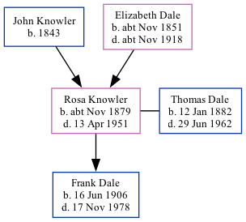

Rosa Ellen Dale (née Knowler) cNov 1879 - 1951
[ Home ] | [ Calendar ] | [ Surnames Index ] | [ Family History ]A domestic housemaid and the child of John Knowler (a general laborer) and Elizabeth Dale, Rosa Knowler, the second cousin three-times-removed on the father's side of <a href="I1.html">Nigel Horne</a>, was born in Bilting, Kent, England <i>c.</i> Nov 1879<span class="citation">1</span>, was baptized in Godmersham, Kent, England on Jan 4, 1880 and married her cousin on her mother's side Thomas Dale (an electrical fitter with whom she had 1 child, Frank Aubrey George) at St Nicholas, Strood, Kent, England on Jul 1, 1905<span class="citation">5</span>.</p><p>Rosa spent all of her life in Kent, England. Throughout her life, she lived in several places around the county: at her birthplace on Apr 3, 1881<span class="citation">6</span> and on Apr 5, 1891<span class="citation">7</span>; at Whitehill House, Ospringe on Mar 31, 1901<span class="citation">8</span>; on Halfway Road, Minster, Sheppey on Jun 19, 1921<span class="citation">9</span> (when she was living with her father, John); and on 95 Halfway Road, Minster, Sheppey on Sep 29, 1939<span class="citation">1</span> and in 1951. <p>She died on Apr 13, 1951 at Isle of Sheppey General Hospital, Sheppey, Kent<span class="citation">2,3,4</span> and was buried at Sheppey Cemetery, Sheerness, Kent on Apr 18, 1951<span class="citation">4</span>.
Parents
- John was born in 1843
- Elizabeth Ann was born c. Nov 1851
Children
- Frank Aubrey George was born on Jun 16, 1906
Citations
- 1939 Register - Findmypast (was the wife of the head of the household)
- England & Wales Government Probate Death Index 1858-2019 - Findmypast
- England & Wales deaths 1837-2007 - Findmypast
- National Burial Index For England & Wales - Findmypast
- England & Wales Marriages 1837-2005 - Findmypast
- 1881 England, Wales & Scotland Census - Findmypast (was age 1 and the daughter of the head of the household)
- 1891 England, Wales & Scotland Census - Findmypast (was age 11 and the daughter of the head of the household)
- 1901 England, Wales & Scotland Census - Findmypast (was age 22 and a servant in the household)
- 1921 Census Of England & Wales - Findmypast (was age 41 and the wife of the head of the household)
Media
England & Wales marriages 1837-2005 - BMD/M/1905/3/AZ/000228/028
England & Wales births 1837-2006 - BMD/B/1879/4/AZ/000323/183
Kent Baptisms - GBPRS/CANT/B/96373896
England Births & Baptisms 1538-1975 - R_885310900
1901 England, Wales & Scotland Census - GBC-1901-0006620488
England & Wales deaths 1837-2007 - BMD/D/1951/2/AZ/000216/144
Kent marriages and banns - PRS/MEDWAY/MAR/0068147/2
1939 Register - TNA/R39/1845/1845H/024/10
National Burial Index for England & Wales - BMD/NBI/11491048
England & Wales Government Probate Death Index 1858-2019 - GBOR/GOVPROBATE/C/1951-1951/00050383
Family Tree
Generated by Ged2Site. Last updated on Jul 20, 2025